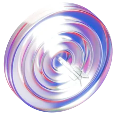
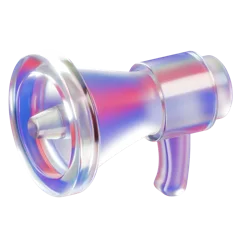

evaluatescore 4.6 · apply
/career-ops contactonote to the hiring manager7 Claude skills that { land you a job }
Open-source skills for Claude Code that scan job boards, score roles, tailor your CV and draft outreach.

evaluatescore 4.6 · apply
/career-ops contactonote to the hiring managerOpen-source skills for Claude Code that scan job boards, score roles, tailor your CV and draft outreach.
Scan, score, tailor, reach out — all from Claude Code.
Open-source skills for Claude Code: scan job boards, score every role, tailor your CV and reach the people hiring.